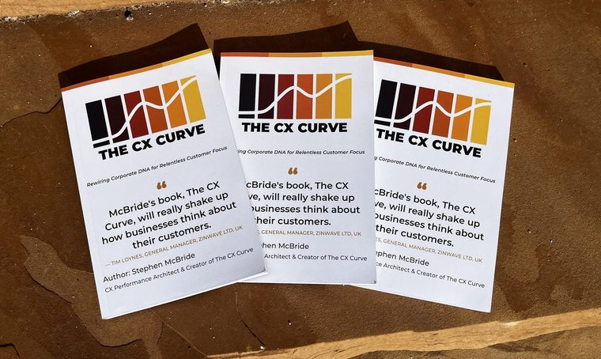

The CX Curve fundamentally shifts how businesses approach customer experience. A holistic, psychologically informed approach that drives deeper loyalty, more referrals, and sustainable growth.Danielle Bass
Attorney/Partner, Honigman LLP
Orbits CX helps executive teams build that momentum by aligning the whole organization around the customer.

Rewiring Corporate DNA for Relentless Customer Focus
“McBride’s book, The CX Curve, will really shake up how businesses think about their customers.” — Tim Loynes, General Manager, Zinwave Ltd, UK
A practical model for leaders who need customer experience to drive loyalty, referrals, and growth — not sit as a cost center.
The final chapter is a field guide — ORBITS maps, momentum checks, and playbooks your team can use the same day.
The CX Curve fundamentally shifts how businesses approach customer experience. A holistic, psychologically informed approach that drives deeper loyalty, more referrals, and sustainable growth.Danielle Bass
Too many companies chase numbers and forget that real growth happens when customers actually trust you. A practical, smart way to focus on what really matters.Cory Maloy
Forget the buzzwords. Dead-simple, high-impact playbook for building loyalty that lasts.James Wright
For any CXO looking to move beyond transactional metrics, this book is a must-read.Bill Tolson
The CX Curve will really shake up how businesses think about their customers. Building trust and momentum, every step of the way.Tim Loynes
When your business aligns with this curve, growth stops feeling forced. It begins to flow with clarity and direction, like gravity.Stephen McBride
Your customer’s journey isn’t a straight line or a funnel. It’s a curve.
The CX Curve maps the arc from “I need something” to “You are solving my problems” to “I’m telling everyone.” It dips when implementation falters and surges when your solution connects. There is no neutral. Every interaction either adds drag or builds momentum.
Hover or tap a stage to explore · the white line is customer momentum across ORBITS
A gap between where customers are and where they want to be sparks the need for change.
Active exploration through reviews, forums, AI research and trusted advice.
Sizing up the whole package: your product, your integrations, and how your team actually operates.
The trigger pulled. Customers commit capital and trust against high expectations.
Value realized. Your solution becomes an indispensable part of their workflow.
The reputation loop. Realized value turns customers into advocates.
Mind the Drift Zones. Between every stage lies a foggy, uncertain space where customers stall. Not yet lost, but not progressing. Plan for them, bridge the gaps before they become chasms, and turn stalls into momentum.
A company can have exceptional products, deep IP, an installed base, talented people, capital, and years of infrastructure behind it and still feel strangely slow.
The gap between expected results and actual momentum is rarely a lack of effort. It is a lack of alignment around the customer’s journey.
momentum trap
mo·men·tum trap noun
Thinking you have momentum when you don’t: building mass with no velocity.
Mass is visible and within your control, so it feels like progress.
Every leader wants a customer-centered company. But there is a constant pull on the orbit toward the numbers. When things get uncertain, it grows stronger and the company bends toward EBITDA. Like gravity, it never rests.
The numbers matter. But under pressure a company falls back on how it is wired. Keeping the customer at the center takes relentless focus and a rewiring of the company’s DNA. Do that, and the numbers don’t suffer. They get stronger.
Three pillars that turn scattered CX work into one system.
Unify leadership around a singular customer-centered direction, eliminate competing priorities, and create the conditions for decisive execution.
Talk about alignment →Align processes, metrics, incentives, and technology so the organization reinforces the customer journey instead of creating friction inside it.
Talk about rewiring →Connect experience decisions to measurable business outcomes, turning CX from an initiative into a contributor to growth, retention, and margin.
Talk about performance →Orbits CX examines the journey through your customers’ eyes to find the Drift Zones — where progress, confidence, or commitment stalls — and shows you where momentum leaks.
Begin a diagnostic →Bring the leadership team onto the same page around the customer journey and the business outcome at stake.
Surface the friction, dissonance, and Drift Zones that interrupt customer momentum.
Translate the findings into focused changes across people, process, technology, metrics, and leadership behavior.
Keep the operating system alive as the business evolves, scales, and encounters new customer realities.
Lessons from mud and chaos: invert the chase. The same move applies when the organization keeps pursuing the customer the wrong way.
Chasing AI hype over user needs sinks most projects. A practical filter for product leaders: AI must empower human agency.
When machines mirror our social wiring, the line between tool and relationship blurs. What that means for leaders and for us.
Hype fades. Momentum and resonance don’t. How the SPIRAL framework turns curiosity into habitual reliance.

Stephen McBride has spent decades helping organizations close the gap between what leaders intend and what customers actually experience. He works at the intersection of product, operations, and executive decision-making — the places where customer business is either created or lost.
He built Orbits CX after years as an operator watching strong products lose momentum to misalignment — not to a lack of effort.
Engagements typically start with executive alignment and a CX diagnostic, then move into the operating changes that keep the system alive as the business scales.
Whether you’re exploring the book, an engagement, or a second perspective — reach out.
stephen@orbitscx.com · St. George, Utah